Because of the depth and complexity of the discussions about this topic, I have pulled it into its own page. I will present the essential description first, what we actually know, some possible interpretations of the current information, and finally recipes I've been gathering, and descriptions of whether they could or could not be what was used, when, and why. Much of the following material appeared in discussions on the Crispin Colloquy (www.bootmaker.com/discuss) - March 12-21 1999, the Medieval Leather Research forum (www.egroups.com/list/medieval-leather), and private correspondence with D.A. Saguto. I will try to note what thoughts relate to which person, but my goal is to present an overall picture of the debate.
First, let me state clearly that we don't know what shoemakers used on their threads during the Middle Ages. It appears to be an article of faith for some scholars (like Pritchard) that shoemaking threads were "waxed", although what exactly is meant by this term is not clear. Let me explain.
In modern leatherworking, as well as medieval sewing (with textiles), beeswax is used to wax (or "cere") the threads. This is done to help lubricate the thread, protect it from moisture, and ostensibly to help hold the threads in place. I believe that it is reasonable to assume that the concepts of "waxing thread" could have derived from such a practice historically, although admittedly there is no evidence that leatherworkers waxes their threads historically. In modern (traditional) shoemaking, something is used to protect the threads and hold them in place that is called "wax", but contains no natural waxes. It is made from pitch and resin. Shoemaker's Wax is sometimes referred to as "hand wax", though this is a 20th centuryism to distinguish it from "Machine wax" (see Standage below). This Shoemaker's Wax can be documented (in English) to have been in use since 18131, inferred by means of documentation to have been in use from 1603/42, and, according to D.A. Saguto, Master Cordwainer for Colonial Williamsburg, there is considerable archeological evidence for its use in shoes at least as early as 16th c. as evidenced by visibly "coated" threads surviving that otherwise would have perished, and quite likely before that. As far as I can determine, the meager bits of thread that have survived in earlier era shoes have not been analyzed for remains of beeswax or pitch.3
Clearly, "waxed" is a poor term since it means different things to different
people. This is the term that is used. If we don't know what the user meant when
they described the usage, we are going to have a problem understanding what was actually
used. It is my contention that there is some confusion regarding several other
terms, including "pitch", since it appears to mean a variety of things to
different people, and that the definition may have become more refined in meaning over
time (which is not unusual for technical jargons). For example, when I was growing up, I
was taught that "pitch" could be used for nearly any molten form of organic tar
or resin. In general, however, pitch refers either to the tar (or is somehow purified from
the tar) created by carbonizing resinous woods without actually burning them and
collecting the tar this generates (which in the part of the country I live in is often
commonly referred to as "creosote", although I believe Creosote is a component in
the tar). For the purposes of this paper, both the terms "pitch" and
"tar" should be considered interchangeable, and refer to the carbonized and
carmelized sap from trees that have been burned.4
Another term that seems to have changed meaning over time is "turpentine", which
I believe at one time referred specifically to the solidified sap extruded from pine and
fir trees (although now, it commonly refers to what was once called "oil of
turpentine"). This is harvested, if I understand the process, boiled in water to melt
it and remove any gross impurities, and
when it re-solidifies, this is "resin". (I believe it can also be harvested by
boiling the resinous wood in water and collecting the stuff that boils out). These boiling
processes appear to be referred to as "distillation" (although I'm used to
restricting that to boiling and collecting the vapor). Some people refer to this
boiled out Resin as "Rosin", although for the purposes of this page those terms
are synonymous, and refer to boiled and solidified tree sap.
Looking now to shoemakers, I have received my understanding basically from two different shoemakers, the first is from an unidentified shoemaker with unknown antecedents, who preferred to retain his anonymity, speaking through a third party, while the other from D.A.Saguto. The former is responsible for the first recipe listed below, the latter for the second. Again, neither can be documented to have been used in the Middle Ages, although there is reason to argue that the latter or something very much like it, was used, at least in Germany, by 14405 (and even perhaps the 1200s)6.
One detail where these two shoemakers differ is that the anonymous gentleman states
clearly that the "waxes" used by shoemakers were, and are, highly individualized
to the Cordwainers who used them, and could contain any number of other materials
including tallow, sperm oil (which actually may refer to the waxy spermaceti extracted
from such oil), and so on. D.A. Saguto, appears to maintain that, based on what
little evidence we have, the ingredients seem to have been largely
consistent, at least since the 17th century, and that is the recipe he gives below.
I can't say for certain, although it does appear from the various shoemaker's waxes
currently on the market (including Vesta Pech (German, and smells strongly of a
petrochemical smell); Jared Holt (hard brittle black "summer" wax and a soft
dark amber "winter" wax); Svart Vaxbeck (Sweden, jet black, and not very
sticky); "Thermo Wax" (British, made by F. Ball & Co., Ltd., Leek,
Staffordshire - "white" (really yellowish-clear), an amber brown and a jet
black)) would suggest there is considerably variation today - although in fairness some of
these variations may have as much to do with the regional differences of the trees used to
render the pitch/tar and resin, as well as the fact that the current commercial
"waxes" can and do incorporate modern ingredients such as coal tar, etc., not in
use historically.
What we do know is that whatever English shoemakers made it out of, they called the material they coated their threads with "Code". "Code" (various spellings pertain) only clearly is used as a term for "shoemaker's wax" after around 1440. It may be used before that, or it may only be a local term (it doesn't appear in Holme (1688), Deloney (1599) or Dekker (1598) who refer to "wax"). It does appear to derive from the same source as "cud", and refers to a sticky solid mass. It seems pretty clear that this stickiness is needed to adhere the bristle to the thread, as well as contributing to firm, tight seams. However, the earliest unambigious description of the "wax" making the thread specifically "sticky" is Garsault (1767).
There are more current examples of waxes that shoemakers use that do use beeswax, for example, there was a secondary type of wax used by shoemakers, according to DA Saguto, dated from the PA Gazette noting shoemakers' goods for sale in Philadelphia, as well as a sprinkling of other sources, since at least the 1730-50 called variously "machine", "masheen", and "white wax". Based on a recipe by Garsault (1767), this was a mixture of resin and beeswax, and cruese (or white lead oxide) pounded in a bag until they fused together. This wax was used for waxing threads for fine or light-colored work. Standage (below) gives a slightly different recipe for White wax, but it remains basically resin and wax. However, Standage also gives a totally different recipe for "machine" wax. It should be noted that Standage may have been referring to a wax for use in a machine here, not the 18th c. "white wax". Saguto humorously refers to the white wax as "masheen", suggesting that name derives from a French term for "mashing" together, since these are blended by being placed in a sack and beaten.
Shoemakers have also traditionally used beeswax to lightly top-coat threads already cered with shoemaker's wax, to lubricate them and to protect them from sticking to one another. It's also used (sometimes cut with tallow) to stab awls into, to lubricate them before using them to pierce holes in the leather.
So, what does this mean? Clearly we don't know what shoemakers in the Middle Ages
were using, or if they were all using the same materials. My working hypothesis is
that when shoemakers began to use actual thread, as opposed to the thonging that they had
been using previously, for sewing and stitching, they adapted not only the thread, but the
techniques from sewing on fabric of using beeswax to cere thread. Gradually,
shoemakers found that straight beeswax had problems, and began to add things like resin to
it, to help it stick the threads together better. Later, perhaps sometime between
1200 and 1400, when using bristles became normal for trying to navigate the curved holes
(see Lasts), adding pine tar/pitch instead of beeswax was
developed, spread, and gradually became standard in order to better stick the bristles to
the thread. After that time, the proportions may have changed, as well as some
additional materials, but essentially the concept remained the same. However, the
earlier beeswax/resin blend remained in use for work that required lighter colored
threads. Can I prove any of this? Of course not, but then neither can I
disprove it, although I am continuing to try. Not everyone agrees with this
hypothesis. D.A. Saguto has posited that when thread began to be used, shoemakers
jumped directly to using the pitch/resin "wax" simply owing
to no evidence yet for any intermediate phase, and did not apparently use beeswax until
much later. That hypothesis is also valid based on the evidence.
If anyone else has further data to add to this discussion, please feel free to contact me.
Recipe 1 from an anonymous shoemaker, by way of Michael J. Merickel, and may be based on some recipes in Standage (see below).
Begin by melting beeswax into a disposable pot or can, double boiler fashion. After that has melted, gently add pieces of the rosin and let it all melt completely. Stir it together well and pour into a disposable container. Let cool. (Start with the beeswax, since the Rosin melts and cools faster than the beeswax, and it's harder to melt the wax into the rosin rather than vice versa). This can be made from a variety of ratios of ingredients, but a mixture of Rosin and Beeswax, with 25-50% rosin to 50-75% beeswax seems to be quite effective. Any number of other materials including tallow, sperm oil (which actually may refer to the waxy spermaceti extracted from such oil) can be used making this stuff.
This recipe produces a very nice, fairly sticky "wax", which retains the green color of the resin and gradually darkening as it collects dirt as it ages. The hardness of which can be altered by adding a little oil or tallow (My thanks to Michael J. Merickel for introducing me to this recipe, and for supplying my first batch of Rosin).
Recipe 2 from D.A.Saguto, Cordwainer at Colonial Williamsburg, and is based on a recipe given in Rees (1813).
To start off: One part rosin, two parts the softest pure pine-pitch . you can find [Rausche Naval Stores in New Orleans sells two hardnesses #112 & #113 I think, both pretty hard for my taste, and North Sea and Baltic Co., in Leeds, UK, sells a really nice soft Swedish pitch, which I prefer, but that only comes in 25 lb. drums, but maybe you'll want to use it for pitching your boat too]. Don't make more than maybe a pound of wax, total, at a time, because if you ruin it, you've lost expensive ingredients and you will ruin some at first. In full-time use, in a shop of three hand-sewn shoemakers working 5 days a week, we go through maybe one nearly golf ball-sized ball of wax per month per person. In summer, in an un air-conditioned shop, I add tallow because it requiresso little to get it the wax ductile. In winter I sometimes substitute beeswax, working in an unheated shop, because if I added enough tallow to get the texture right under these conditions, the wax easily turns to a black tar-like mass that won't stick [i.e., ruined]. Winter shoemaking is a big problem because of the wax, and 18th c. accounts suggest that it was a problem then too. If you're working in a heated, 20th c. shop, I'd try to get it to work for you with the "correct" tallow rather than beeswax if at all possible. Go easy though, like the old Brillcreme ads: "a little dab'll do ya--a big goob'll goo ya". Carefully melt the pitch and rosin together to a liquid state, butdo not allow them to boil or simmer [this cooks-out some naturally occurring oils and makes it even more brittle]. Do not let it get so hot that it begins to smoke, as this in approaching flash-point! When the pitch and rosin are liquid, add a little lump of tallow and stir it well to mix everything. Pour your ladle of wax into a bucket of water. Splash the water on top of the molten mass so it sinks. Then carefully with your hands UNDER WATER [to avoid burns] press it out flat and work it for just a few moments to get it just cool enough to lift out of the water--about the consistency of old Silly Putty. There's still a molten core inside that will melt its way out and burn you badly, so be very careful. Keep your hands wet with water. You should be able to work the wax like salt water taffy at this point, by rolling it out into a long "cigar" and then pulling it like taffy. Fold it up and pull it again, and again as quickly as you can before it cools completely. The wax should 1) be soft enough at this point to support itself as you pull it out into a long string without breaking or snapping, and 2) the pulling should bleach the pitch and turn it all a golden amber color. If it keeps snapping when you try to pull it, re-melt and add more tallow and pitch. If it stays black, won't bleach, and is still really soft after, say, 5 minutes of taffy-pulling, there's too much tallow in it. Re-melt and add a bit more rosin and pitch in proportion. After you get it working nearly properly, roll it into balls and wrap with paper, and let it sit to cool completely for a few hours. To test, make a thread and wax it, and try a stitch or two. If the wax flakes off the thread or won't stick to it, it's time to re-melt and add bit more pitch, and maybe a bit less tallow [too generous with the tallow at this point and you'll completely loose the stickiness and turn it black=throw it out and start over]. The waxed thread should be a medium amber/burgundy color, and feeling tacky like half-dried varnish. The thread, once waxed, should be slightly stiff. You've really got to play with it until you get the result where you like it. In use, historically, some shoemakers had to store their balls of wax in a little dish of water, or in the shop tub, to keep them from melting and sticking to the bench, which tells me that it was preferred softer/stickier rather than harder/cleaner. Also, many old 17th, 18th and 19th c. shoe tools are encrusted with the stuff thick as fudge icing, and I know my hands at the end of the day are pretty soiled with it. It's not "clean" stuff. The tendency in the beginning is to make it too hard because it feels so messy otherwise. When ready for use it should be about as soft as a cake of raw beeswax, so you can easily dig your thumbnail into the ball, and when you rub it onto your thread, it should readily friction-melt and accumulate heavily on the thread with just a few passes. After you wax your threads merely "skeined-up" [strands side by side, but as of yet un-twisted into "the thread"], then twist them to get the wax coating the cordage, then wax the outsides again and rub the thread briskly with a folded scrap of uppers leather to further melt the wax into the thread and smooth the surface. When stitching, if you notice little piles of wax "dust" building-up at each stitch hole, but the thread otherwise seems to be holding its wax, you're very close, but still a wee bit too hard. Little blobs of soft wax "balling-up" at each hole is okay. Some wax is drained from the thread as its full length passes through each hole. This excess is melted into the leather surrounding each stitch and makes the seam firmer, but this constant drain means you need to re-wax your thread if it's a long one, maybe every few inches to keep it "full". If the warmth of your hands melts the wax while handling the thread to the point wax peels off the thread in great sticky swaths and sticks to you, you're a wee bit too soft. While stitching you must pluck your threads through the holes smartly, for if the wax it working right, when you linger too long in mid-stitch, the thread will cool and seize-up cementing itself in place, and you will have to carefully withdraw your threads, re-pierce the hole, and try again. If you try and force it, especially if you tug on the bristles here, you'll break your bristles every time. Remember, shoemakers' wax is a protective coating and adhesive for the thread and seam. It actually makes it harder to sewn, not easier. Only careful fiddling will get the texture just right, and every supplier's pine pitch is different, [rosin and tallow are the only near consistent ingredients here]. When you get the mix that works for you with the pitch you've chosen to use, write down the quantities exactly, like a chemistry experiment, so you will be ahead of the game next time when you need to make another batch.
Rees, John F. The art and mystery of a cordwainer; or, An essay on the principles and practice of boot and shoe-making. With illustrative copperplates. London: Printed for Gale, Curtis, and Fenner, 1813.
Wax should be made of the best black pitch, with a fourth part of rosin, and a little fine oil, if you find it
hard..."
Standage, H.C. The Leather Worker's Manual. 3rd Ed. London: Scott, Greenwood & Son, 1920. (1st ed. 1899)
(p.51)
Shoemaker's waxes:
Ingredients: 40 lb. Rosin
4 lb. Heavy Rosin Oil
4 lb. Heavy Coal-Tar Oil (free from creosote)
2 lb. Chrome Yellow
2 lb. Chalk
Put the Rosin in a suitable boiler and heat it until it melts, then add the rosin oil and coal tar oil, and heat up the mixture until it boils, and continue the boiling until a sample, when taken from the boiler, can be kneaded and drawn out into threads between the fingers; then allow the mixture to cool, and while in a fluid state stir in the chrome yellow and chalk, both in dry powdered state; Mix thoroughly by stirring, and when homogenous allow to cool until plastic enough to be molded into suitable sized pieces of "cobblers wax".Another formula is to melt together tallow and Swedish pitch, and when plastic form in to balls; the quantity of tallow is best determined by experiment.
(p.56)
Waxes for Sewing Soles, etc.:
Ingredients: 10 oz. Pitch
10 oz. Rosin
1 oz. Tallow
Melt together and when cool enough pull it until it assumes a pale brown color; this pulling effects a partial bleaching of the wax, whereby the black color of the pitch is decreased.(p.57)
Wax for Sewing Machines:
Ingredients: 4 lb. Rosin 1 lb. Pitch
1/4 lb. Beeswax
3 oz. Tallow (refined)
3 oz. Sperm OilWhite Wax for waxing hemp sewing threads, etc:
Mix together by heating equal weights of
Virgin Wax
Rosin
Flake white dry powder.
Melt the wax and rosin together first, and then stir in the white pigment.
Garsault, Fran�ois Alexandre de. Art du Cordonnier. France: s.n.,1767.
Cere (Johnson 1755)
v.t. [from cera, Lat. wax]
You ought to pierce the skin with a needle, and strong brown thread, cered about half an inch from the edges of the lips. Wiseman.
Cere (Websters 1828)
v.t. [L cera, wax] To wax or cover with wax.
Cere (OED 2d Ed.)
Code (OED 2d Ed.)
sb. Obs. Also Coode. Pitch, cobbler's wax.
1358 Ord. in Riley London Mem (1868) Code, rosin,, or other manner of
refuse.
c1440 Wycliffe Ex. ii 3 (MS. Bodl. 277) She took a segge leep, and clemede it
with coode
[1382 glewishe cley 1388 tar]
c1440 Promp. Parv. 85 Code, Sowters wex [H.P. coode]
c.1485 Digby Myst. (1882) ii, 103 Be-paynted with sowter's code.
Colophony (Johnson 1755)
n.s. [from Colophon, a city whence it came.]
Rosin.
Of Venetian turpentine, slowly evaporating about a fourth or fifth part, the remaining substance suffered to cool, would afford me a coherent body, or a fine colophony. Boyle.
Turpentines and oils leave a colophony, upon the separation of their inner oils.
Colophony (Websters 1828)
n. In pharmacy, black resin or turpentine boiled in water and dried; or the residium, after distillation of the oil of turpentine, being further urged by a more intense and continuous fire. It is so named from Colophon in Ionia whence the best was formerly brought. Nicholson. Encyc.
Colophony (OED 2d Ed.)
The dark or amber-colored resin obtained by distilling turpentine with water. Formerly also called Greek pitch (Pix graeca)
1398 Trevisa Barth. de. P.R. xvii. lxxvii (1495) 651 Powder of Coliphonie that hyghte Pitis in grewe...
Creosote (OAD 1980)
Handwax (Not in Johnson 1755, Websters 1828, OED, OAD)
Oleoresin (OED 2d Ed.)
Pine Tar (Not in Websters 1828, OED, OAD)
Pitch (Johnson 1755)
n.s. [pic, Sax., pix, Lat.] The resin of the pine extracted by fire and inspissated.
The that touch pitch will be defiled. Proverbs...
Pitch (Websters 1828)
Pitch (OAD 1980)
n. a dark resinous tarry substance that sets hard, used for caulking seams of ships, etc.
Pitch (OED 2d Ed.)
According to A History of Technology, v.III From the Renaissance to the Industrial Revolution, c.1500-c.1750 (1957) p.685, "Pitch" is produced by boiling tar until a sample, upon cooling, assumes the consistancy you desire.
Resin (Johnson 1755)
n.s. [resine, Fr. resina, Lat.] The fat, sulpherous parts of some vegetable, which is natural or procured by art, and will incorporate with oil or spirit, but not an aqueous menstruum. Quincy.
Resin (Websters 1828)
An inflammable substance, hard when cool, but viscid when heated, exsuding in a fluid state from certain kinds of trees, as pine, either spontaneously or by incision. Resins are soluable in oils and alcohol, and are said to be nothing but oils concreted by combination with oxygen. Resins differ from gums, which are vegetable mucilage, and they are less sweet and odorous than balsams. Encyc. Nicholson. Fourcroy.
Resin (OAD 1980)
Resin (OED 2d Ed.)
According to A History of Technology, v.III From the Renaissance to the Industrial Revolution, c.1500-c.1750 (1957) p.685, "Resin" is produced by boiling the knotty parts of pitch-pine, split finely, in water, with the "turpentine", or liquid resin, gradually thickening. Pliny (Natural History, XVI, 52-56) also discusses this technique, and compares it to methods of boiling it. How to make Resin: according to an anonymous shoemaker via Michael J. Mericke:
"Scrape dried pitch off of some trees. I'm not sure if it matters what sort of tree, although different trees may have different properties. I know that Scotch Pine pitch and Beech pitch have been used. Put the pitch into a disposable pot or coffee can. Place that inside a pot of boiling water, double boiler fashion, and "cook it down". Strain it with some cheesecloth to remove the impurities, and let cool. The resulting material is rosin. When melted, dissolved, or mixed with other materials, it can be used for a number of purposes, such as varnishing, coating the strings of some musical instruments."
Rosin (Johnson 1755)
n.s. [properly resin; resine, Fr.; resina, Lat.]
Rosin (Websters 1828)
n. s as z. [This is only a different orthography than resin. See resin.]
Rosin (OAD 1980)
A kind of resin.
Rosin (OED 2d Ed.)
Tar (Johnson 1755)
n.s. [tare, Saxon; tarre, Dutch; tiere, Danish] Liquid pitch; the turpentine of the pine or fir drained out by fire.
Tar (Websters 1828)
Tar (OAD 1980)
Tar (OED 2d Ed.)
According to A History of Technology, v.III From the Renaissance to the Industrial Revolution, c.1500-c.1750 (1957) p.685. This tar is produced by burning the knotty parts of pitch-pine, over a vessel to catch the liquid, the wood being protected from the fire by a separating covering of earth. A similar technique is given in Foxfire 4 (1977), p.252 for producing "Pine Tar" although this version has the tar being drawn off through a drain. The technique of dry distillation referred to here, including the drain in the tar-kiln, were described in Pliny (Natural History, XVI, 52-56) and Theophrastus (Hist. Plant.. IX.3.1-4). Pliny also describes some of the uses this tar can be put to as well as how to derive pitch-resin from it..

Turpentine (Johnson 1755)
n.s. [turpentina, Italian; terebinthina, Lat.] The gum exuded by the pine, the juniper, and other trees of that kind....
Turpentine (Websters 1828)
A naturally resinous substance, flowing naturally or by incision from several species of trees, as from pine, larch, fir, &c. Common turpentine is about the consistence of honey; but there are several varieties. Cyc.
Turpentine (OAD 1980)
Oil distilled from the resin of certain trees, used for thinning paint and as a solvent.
Turpentine (OED 2d Ed.)
Lambert, Joseph B. Traces of the past, unraveling the secrets of archaeology through chemistry, (1997) p.160
"Unprocessed pine resin has sometimes been called common turpentine (the term turpentine is used for resin from other sources as well). On destructive distillation, pine resin gives oil of turpentine as the volatiles (hence a tar), and the residue is called rosin or colophony (hence a pitch)."
Wax (condensed from OED 2d Ed.)
As a term, derives ultimately from the Old Teutonic, by way of Old Saxon and into Middle English, where it refers to beeswax. It is used to refer to artificial "wax"-like compounds from at least 1767. The term "Sowterly Waxe" appears in 1622 (Massinger & Dekker - Virgin & Martyr III "Shoemakers Waxe" 1603 Dekker Wonderf Yr. Wks (Grosart) I 132. "Shoemaker's End" 1598 Florio, Lesina (Cobblers Wax and Cobblers End don't appear until the 19th century).